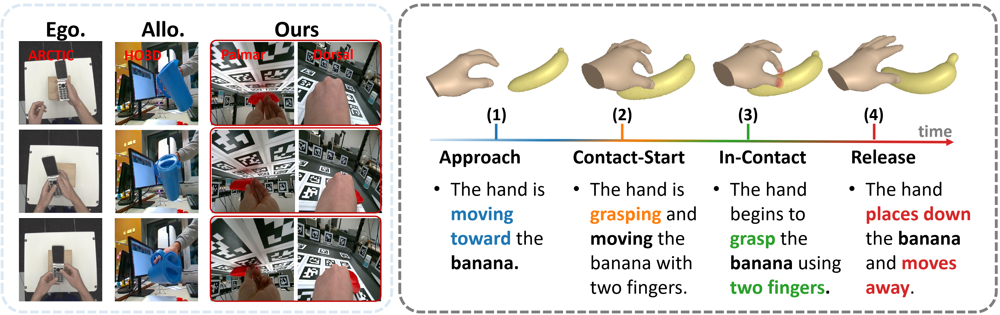
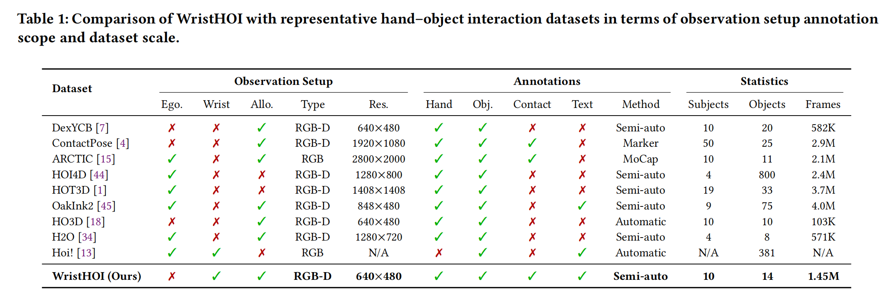
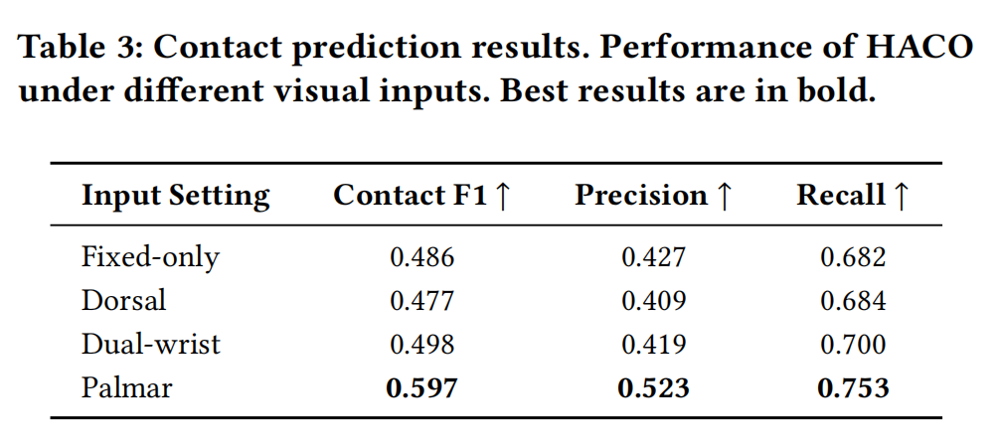
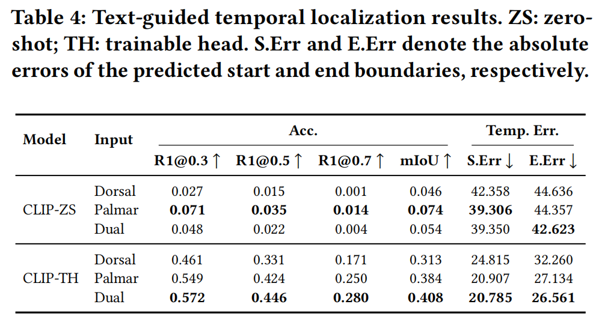

WristHOI: A Dual Wrist-mounted Dataset for Contact-aware Hand-Object Interaction
Abstract
Fine-grained hand-object interaction (HOI) understanding relies heavily on the precise capture of contact dynamics. However, conventional allocentric and egocentric viewpoints are often hindered by severe self-occlusion and object-induced occlusion, resulting in sparse and fragmented contact cues. We present WristHOI, a dual wrist-mounted dataset designed to capture the proximal “last-mile” of interaction. WristHOI employs a symmetric near-field camera configuration to provide synchronized, complementary observations from both dorsal and palmar perspectives. While this near-field setup introduces technical hurdles such as extreme perspective distortions and rapid viewpoint variations, it offers unprecedented visual evidence at the fingertip-object interface. The dataset comprises 1,260 sequences of 10 subjects interacting with 14 objects across three grasping paradigms (G2, G3, G5). In total, WristHOI provides 1.45M frames with high-quality annotations at multiple levels, including hand-object poses, contact labels, and temporal interaction states. We establish a comprehensive benchmark for pose estimation, contact prediction, and temporal interaction understanding. Our results demonstrate the value of wrist-mounted observations for capturing fine-grained interaction cues under severe occlusion.
Overview

Figure 1: Overview of WristHOI. (Left) Comparison with existing egocentric and allocentric HOI datasets. (Right) Example of a hand–object interaction sequence with annotated temporal phase
Wrist-mounted view Examples
Sample：p003_cup_g5
Sample: p003_handcream_g5
Sample: p003_plate_g5
Sample：p003_rectangularbox_g5
Sample：p003_tallcylinder_g5
Fixed-view(Allocentric) Examples
Sample：p003_CosmeticPump_g2
Sample: p003_cup_g2
Sample: p003_plate_g2
Sample：p003_TallCylinder_g2

Benchmark Results


Table. Main benchmark results on WristHOI (quantitative comparison and metrics definitions follow the paper).
Acknowledgments
This research was supported by the MSIT (Ministry of Science and ICT), Korea, under the ITRC (Information Technology Research Center) support program (IITP-2025-RS-2024-00437102) and the Global Research Support Program in the Digital Field program (IITP-2025-RS-2024-00418641) supervised by the IITP (Institute for Information & Communications Technology Planning & Evaluation).
BibTeX
@misc{wristhoi2026,
title = {WristHOI: A Dual Wrist-mounted Dataset for Contact-aware Hand-Object Interaction},
author = {Xin Chu, Junghoon Sung, Changho Kim, Seongwhan Cho, Eunjee Choi, JongHa Lee, Younggeun Choi},
year = {2026},
howpublished = {Under review for ACM Multimedia 2026}
}